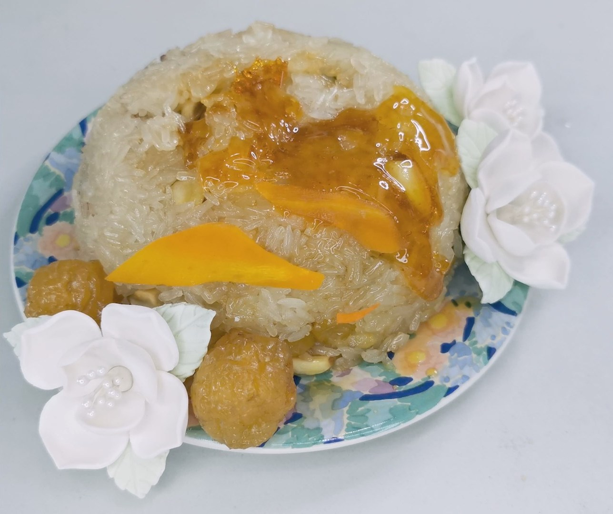

Prosperous Peace

Description
Ganyu's specialty. The image of a resting qilin is by itself enough to
calm a person down. Ganyu has put her well-wishes for all that is lovely
in this world into this dish — and she's saved some of her favorite
Qingxin flowers for you, too.
Ingredients
Prosperous Peace
- Glutinous Rice measured to half the bowl for steaming
- Red Bean Paste to taste, only a few Tbsp is needed
- Red Dates to taste
- Lotus Seeds to taste
- Walnuts to taste
- Dried Prunes to taste (leave 2 whole as garnish)
- Sugar to taste
- Vegetable oil
Red bean paste
- 200 g Red beans
- 100 g sugar or more to taste
Caramel
- 3 tbsp sugar
- splash water
Steps
-
The night before, soak glutinous rice, lotus seeds and red beans in
water.
-
The next day, drain the liquid. Put lotus seeds and gluitnous rice in a
steamer for 1 hour. Boil red beans in water just enough to cover for 1
hour as well. Remember to check the water levels regularly so it doesn’t
dry up.
-
Take the time to cut out the patterns you want to go on the rice on a
parchment paper. The plan is to drizzle caramel over. Also, peel thin
sheets of carrots, then carve the eyes and ears of the Qilin using a
knife.
-
Chop the other ingredients to go into the dish. Any sweet fruits ornuts
work. You can follow the traditional ingredients instead of my list, for
example.
-
When the hour is up for arts and craft, turn off the heat for the
steamer. While the burner is still on for the red bean, add in sugar
half the weight of red beans you used. (e.g. 200g red bean: 100g sugar)
-
Stir in the sugar until it is well dissolved into the red bean. You can
blend this and strain for a smooth paste. If you’re lazy or prefer
chunky red bean, just mash with the back of a ladle. This can store in
the fridge for a week or in the freezer for a month.
-
Take a few pieces of lotus seeds aside from the lotus seed/rice mixture.
Mix the rest with a sprinkle of sugar and some vegetable oil.
-
Line a steam-proof bowl with vegetable oil, and you can start arranging.
This is pretty much up to your own artistic interpretation for how you
want to arrange. I’m going with bottom layer rice, red bean paste,
another layer of rice, dried fruits and nuts mixture, then rice to
cover, with lotus seeds on the sides.
- Steam this for another half hour to 45 minutes.
-
After steaming, loosen the sides of the rice, then put a plate to cover
and flip over. Remember to use mittens or something as this is hot.
-
Make a caramel using 3 Tbsp of sugar and a splash of water. It is
generally easier to make caramel with more sugar, but I don’t like
wasting. Turn on to medium heat and watch the sugar melt. Water will
start to boil away from the sugar.
-
Be very patient. As the liquid gets thicker, it will start to turn
yellowish (this is the sugar caramelising). Once you see it turn just a
little brown, shut off the heat and use this immediately.
-
Put the parchment paper over the rice, then pour the caramel over. Lift
off the parchment paper, and the shape you cut out should be formed.
-
Paste the carrot ears and eyes over. The glutinous rice and caramel
should be sticky enough. Add some edible white flowers or gum paste
flowers and yellow berry look-alike (I used dried yellow prunes) for
decoration.